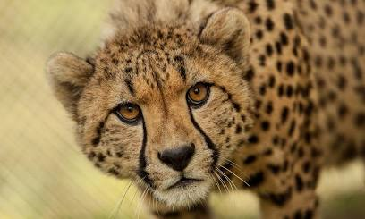
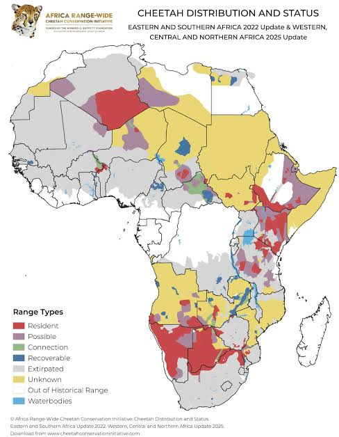
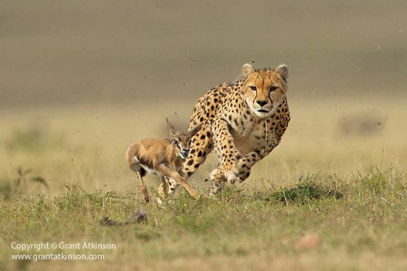
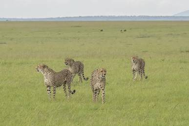
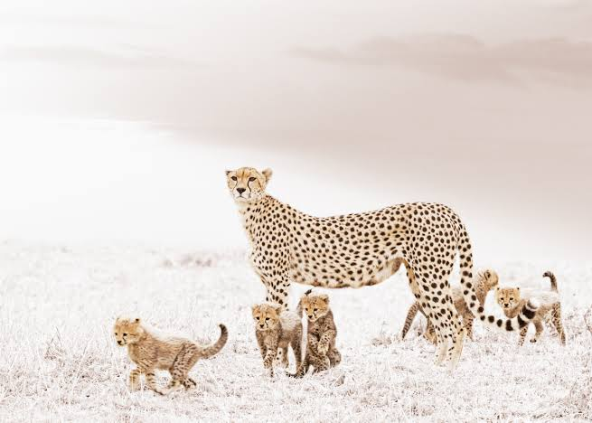
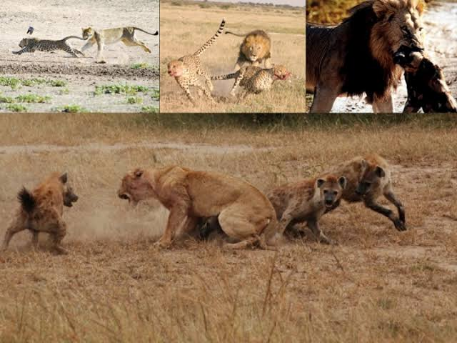

<!DOCTYPE html>
<html lang="en">
<head>
    <meta charset="UTF-8">
    <meta name="viewport" content="width=device-width, initial-scale=1.0">
    <title>Cheetah Dossier</title>
</head>
<body>
    
</body>
</html>

<header>
<h1>Species Page: Cheetah</h1>
</header>

<nav>
    <ul>
<li><a href="african-adventure.html">Home</a></li>
    </ul>
</nav>

<main>
    <article>
        <section id="basic-info">
            <h2>Scientific Information</h2>
            <p><strong>Common Name:</strong> Cheetah</p>
            <p><strong>Status/Conservation:</strong> Vulnerable <sup><a href="#ref1">[1]</a></sup></p>
            <section id="classification">
                <h2>Full Scientific Classification</h2>
                <table border="1">
                    <tr><th>Taxonomic Rank</th><th>Classification</th></tr>
                    <tr><td>Kingdom</td><td>Animalia</td></tr>
                    <tr><td>Phylum</td><td>Chordata</td></tr>
                    <tr><td>Subphylum</td><td>Vertebrata</td></tr>
                    <tr><td>Class</td><td>Mammalia</td></tr>
                    <tr><td>Subclass</td><td>Theria</td></tr>
                    <tr><td>Order</td><td>Carnivora</td></tr>
                    <tr><td>Suborder</td><td>Feliformia</td></tr>
                    <tr><td>Family</td><td>Felidae</td></tr>
                    <tr><td>Genus</td><td>Acinonyx</td></tr>
                    <tr><td>Species</td><td>Acinonyx jubatus</td></tr>
                </table>
            </section>
         <section id="physical-profile">
            <h2>Physical-profile</h2>
            <dl>
               <dt>Size range</dt>
               <dd> Body length measures 3.5 to 4.5 feet (1.1 to 1.4 meters), with a shoulder height of about 2.4 feet (70 to 90 cm). </dd>

               <dt>Weight</dt>
               <dd> Weighs 46 to 159 pounds (21 to 72 kg).</dd>
               <dt>Identification Markings</dt>
               <dd>Identification Markings: Tawny to golden-colored coats covered in solid black spots, featuring iconic black "tear stripes" running from the inside corners of their eyes down to their mouths to deflect the glaring sun.  
                <sup><a href="#ref2">[2]</a></sup></dd>
           </dl>
           
       </section>
       <section id="habitat-geography">
        <h2>Habitat & Geography</h2>
        <p>Habitats: Open grasslands, arid savannas, scrub forests, and rugged terrain.
            Distribution: Primarily scattered throughout Eastern and Southern Africa, with a small critically endangered population surviving in Iran.</p>
<h3>Distribution Map</h3>

        </section>
<section id="ecology and behavior">
    <h2>Ecology and Behavior</h2>
<h3>Feeding and Diet</h3>
<p>Carnivorous apex sprinters specializing in hunting medium-sized prey such as gazelles, impalas, and springbok using bursts of incredible speed up to 70 mph.</p>
<ul>
    
</section>
<section id="communication and social behavior">
    <h2>Communication and Social Behavior</h2>
    <p>Solitary females or bonded coalitions of male cheetahs communicate via chirps, purrs, yelps, and scent-marking prominent trees and termite mounds.</p>
    
</ol>
<h3>Life Cycle and Breeding Behaviors</h3>
                <p>Females give birth to litters of 3 to 5 cubs after a 3-month gestation period, raising them hidden in dense brush while protecting them from larger predators.</p>
                
            
            
                <section id="Predators">
    <h2>Predators</h2>
    <p>While adult cheetahs have few predators, their cubs face severe threats from lions, leopards, and hyenas who frequently kill litters and steal freshly caught kills.</p>
    
</section>
    </article>
</main>